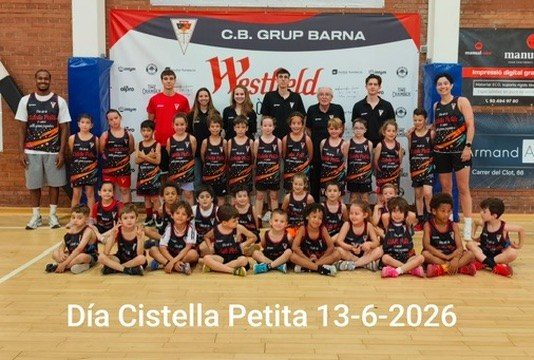
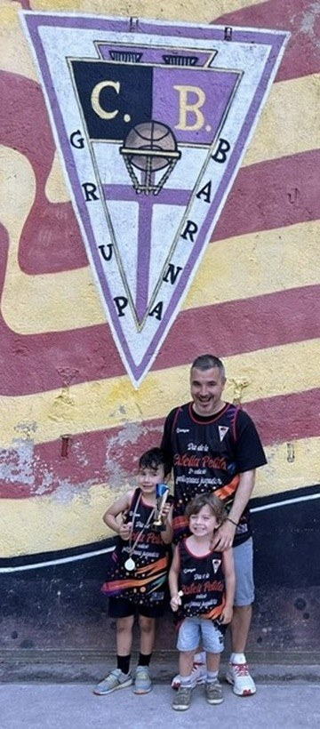
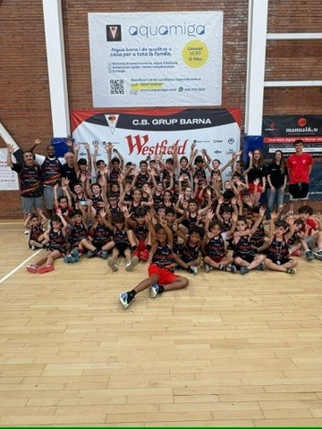
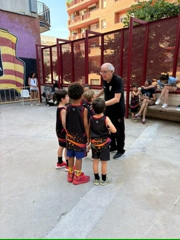
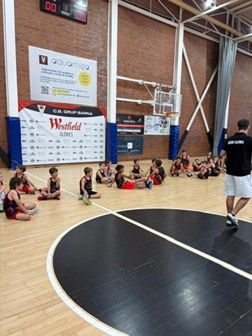
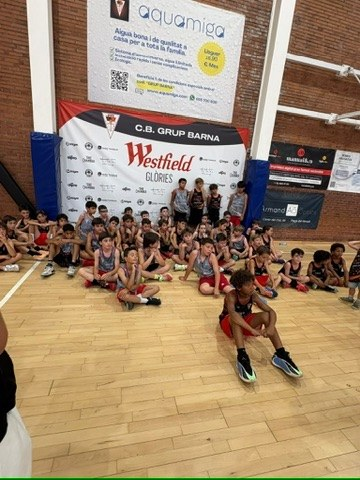

Festival de minibàsquet · La Nau del Clot · Barcelona
Cistella Petita
Si el 3x3 és la festa del bàsquet obert a la ciutat, la Cistella Petita és la festa dels més petits: el festival de minibàsquet del CB Grup Barna i del barri, pensat perquè els infants de 3 a 8 anys visquin el seu gran dia com a jugadors.
El gran dia dels més petits
Partits adaptats a mida dels infants, jocs, medalles per a tothom i famílies a la graderia. És sovint el primer contacte de moltes criatures amb el bàsquet i amb el CB Grup Barna — i la porta d'entrada natural a l'Escoleta del club.
Per al club, la Cistella Petita és molt més que una jornada lúdica: és la primera baula d'un recorregut que comença als 3 anys i que, com demostren els dos primers equips sènior del Barna, pot arribar fins a l'elit del bàsquet català sense sortir mai del mateix club.
La 2a edició, en imatges
Fotos del Dia de la Cistella Petita, 13 de juny de 2026.






Com apuntar-s'hi
No cal ser de l'Escoleta per participar-hi: la Cistella Petita és una jornada oberta al barri. Les dates i la inscripció de la propera edició s'anuncien en aquesta pàgina i a Instagram (@cbgrupbarna); per a qualsevol dubte, es pot escriure pel WhatsApp del club o consultar directament amb Julio Torralba al 646 205 526.
Fotos de l'última edició
Les fotos de la Cistella Petita 2a Edició (13 de juny de 2026) estan disponibles a la galeria de fotos del club.
Preguntes freqüents
Què és la Cistella Petita?
El festival de minibàsquet del CB Grup Barna i del barri, pensat perquè els infants de 3 a 8 anys visquin el seu gran dia com a jugadors: partits adaptats, jocs, medalles i famílies a la graderia.
Qui hi pot participar?
Infants de 3 a 8 anys, siguin o no de l'Escoleta del club. És sovint el primer contacte de moltes criatures amb el bàsquet i amb el CB Grup Barna.
Quan és la propera edició?
La Cistella Petita se celebra un cop l'any, al juny. Les dates s'anuncien en aquesta pàgina i a Instagram (@cbgrupbarna).
La Cistella Petita porta a l'Escoleta?
Sí. És la porta d'entrada natural a l'Escoleta del CB Grup Barna, el programa d'iniciació al bàsquet per a infants de 4 a 8 anys.
Què és la Cistella Petita i per a qui és?
És el festival de minibàsquet del CB Grup Barna i del barri, pensat perquè els infants de 3 a 8 anys visquin el seu gran dia com a jugadors. Si el 3x3 és la festa del bàsquet obert a la ciutat, la Cistella Petita és la festa dels més petits, a La Nau del Clot.
Vols que el teu fill o filla hi participi?
T'avisem quan s'obri la inscripció de la propera edició.